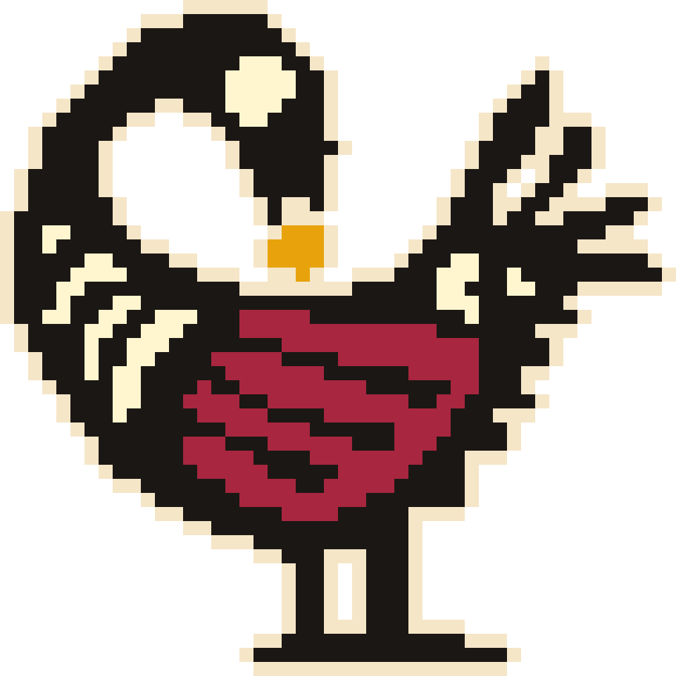
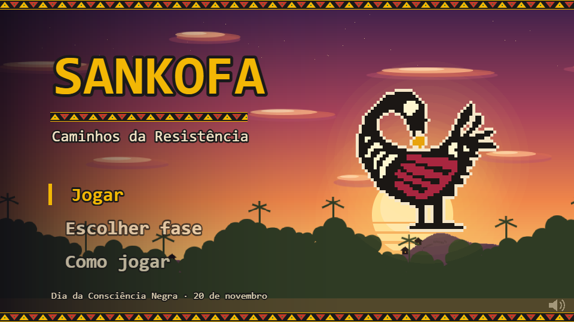
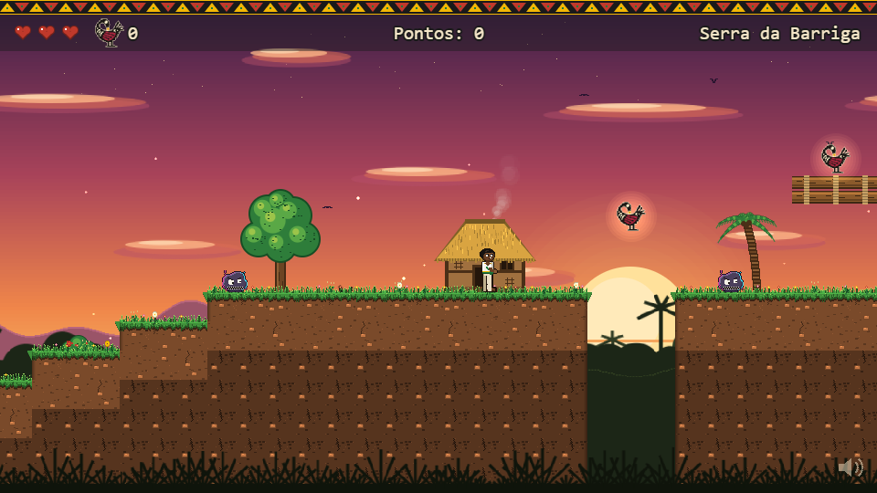
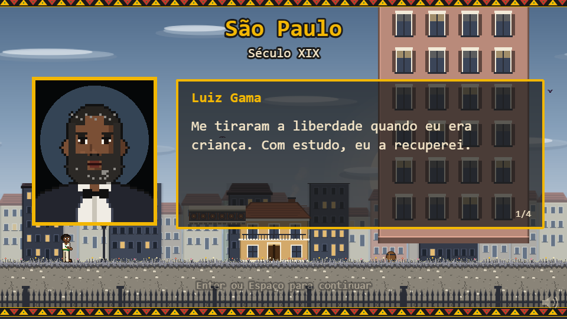
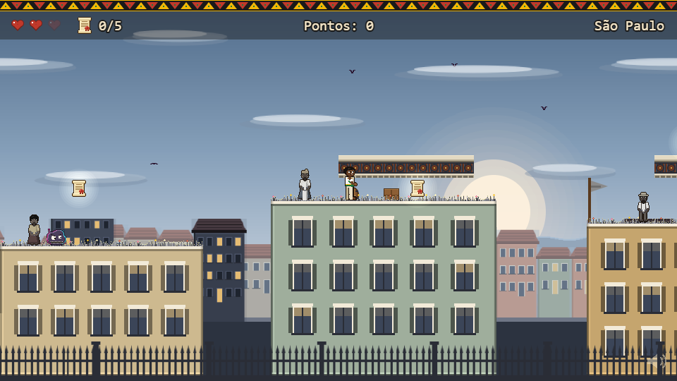
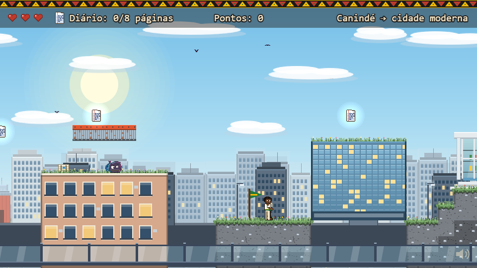
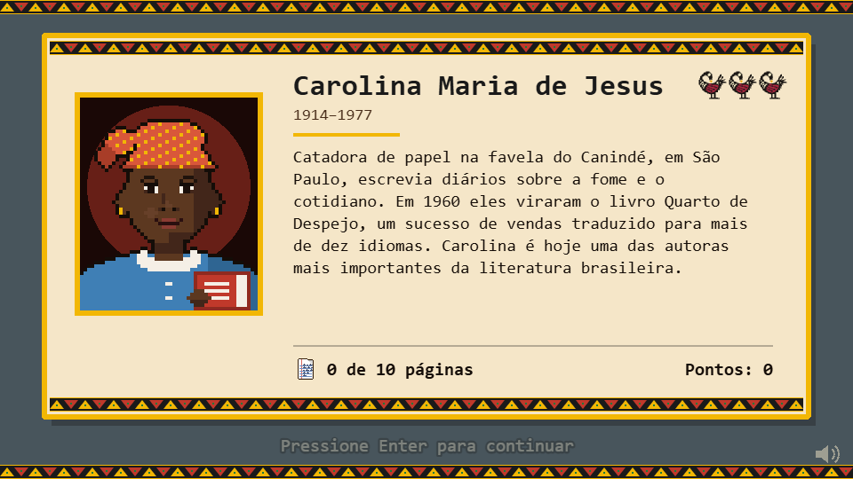
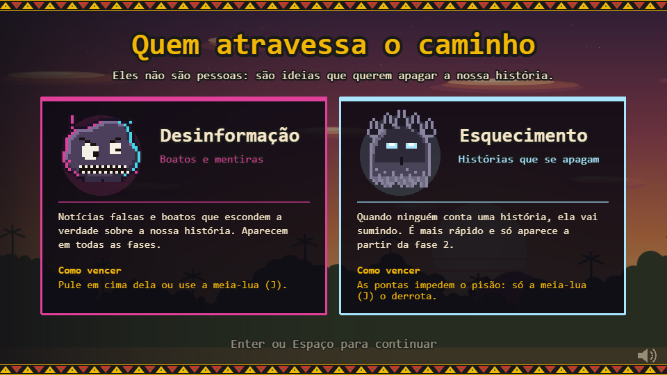

SANKOFA
Caminhos da Resistência
Zumbi · Luiz Gama · Carolina Maria de Jesus
Dia da Consciência Negra · 20 de novembro

Símbolo Adinkra · povos akan, África Ocidental
Um pássaro que olha para trás
“Voltar e buscar o que ficou para trás.”
Conhecer o passado para construir o futuro.
Véspera do 20 de novembro
Aiyê não sabe por onde começar
- Estudante e capoeirista, precisa apresentar um trabalho sobre a história negra do Brasil.
- Depois da roda, encontra no chão um símbolo brilhando: um Sankofa.
- Ao tocar nele, o mundo gira e Aiyê volta no tempo.

Três épocas, três mentores
Uma linha do tempo da resistência
- Séc. XVIIZumbi dos PalmaresSerra da Barriga
- Séc. XIXLuiz GamaSão Paulo
- Séc. XXCarolina Maria de JesusCanindé → cidade
Fase 1 · Século XVII
Serra da Barriga
Mentor: Zumbi dos Palmares
- Mata, morros e paliçadas do Quilombo dos Palmares, que resistiu por mais de um século.
- Ensina a ginga, o aú (pulo duplo) e a meia-lua.
- Coletável: o próprio Sankofa.
Falas inspiradas, não citações. Retrato imaginado: não existe imagem de Zumbi feita em vida.

Fase 2 · Século XIX
São Paulo
Mentor: Luiz Gama
- Vendido como escravizado aos 10 anos, conquistou a liberdade pelo estudo e libertou centenas de pessoas nos tribunais.
- Junte 5 cartas de alforria: cada uma liberta uma pessoa da fase.
- Ensina a esquiva, para passar pelas passagens baixas.


Fase 3 · Século XX
Canindé → cidade moderna
Mentora: Carolina Maria de Jesus
- Catadora de papel, escrevia diários que viraram o livro Quarto de Despejo (1960).
- Recolha 8 páginas do diário e leve-as até a biblioteca.
- A fase junta tudo: aú, meia-lua e esquiva.


Jogabilidade
Cada movimento é capoeira
- auto
Ginga
O personagem nunca fica parado.
- Espaço ×2
Aú
O pulo duplo, com uma estrela no ar.
- J
Meia-lua de compasso
O golpe que vence os dois inimigos.
- ↓
Cocorinha
A esquiva para passar por lugares baixos.
Quem atravessa o caminho
Ideias, não pessoas
Os inimigos são ideias que querem apagar a nossa história.
Desinformação
Boatos e mentiras. Cai com um pulo em cima ou com a meia-lua.
Esquecimento
Histórias que se apagam. Mais rápido, só cai com a meia-lua.

Bastidores
Tudo feito em código
- 0arquivos de imagem ou som: a arte e a música são geradas no código
- 0trilhas originais no espírito da capoeira e do samba
- 0fases, de 1 a 2 minutos cada
- 0× 540 de resolução, no teclado ou no celular
Phaser 3TypeScriptViteWeb Audio
Voltar, buscar e levar adiante
Zumbi ensina a resistir. Luiz Gama, a usar o conhecimento. Carolina, a ter voz.
Feito por Nathan Domingues para o Novembro Negro